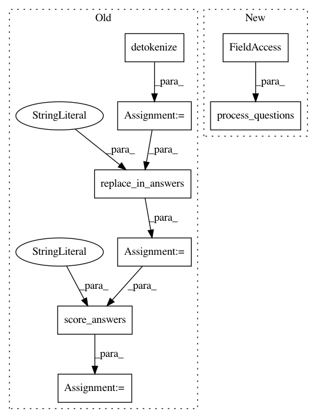

0e2a7f6d85a341959eba41d65019b2566084b406,inference.py,,inference,#,184
Before Change
// Main inference function
def inference(question, include_blacklisted = True):
answers = inference_helper(tokenize(question))[0]
answers = detokenize(answers)
answers = replace_in_answers(answers, "answers")
answers_score = score_answers(answers, "answers")
best_index, best_score = get_best_score(answers_score, include_blacklisted)
return {"answers": answers, "scores": answers_score, "best_index": best_index, "best_score": best_score}
After Change
def inference(questions, include_blacklisted = True):
// Process questions
answers_list = process_questions(questions, include_blacklisted)
// Return (one or more?)
if len(answers_list) == 1:
return answers_list[0]
In pattern: SUPERPATTERN
Frequency: 3
Non-data size: 8
Instances
Project Name: daniel-kukiela/nmt-chatbot
Commit Name: 0e2a7f6d85a341959eba41d65019b2566084b406
Time: 2017-12-03
Author: daniel@kukiela.pl
File Name: inference.py
Class Name:
Method Name: inference
Project Name: daniel-kukiela/nmt-chatbot
Commit Name: 0e2a7f6d85a341959eba41d65019b2566084b406
Time: 2017-12-03
Author: daniel@kukiela.pl
File Name: inference.py
Class Name:
Method Name: inference_internal
Project Name: daniel-kukiela/nmt-chatbot
Commit Name: 0e2a7f6d85a341959eba41d65019b2566084b406
Time: 2017-12-03
Author: daniel@kukiela.pl
File Name: inference.py
Class Name:
Method Name: